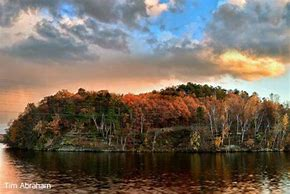

Mt. Simon Park

This 300 acre park features 2 picnic pavilions & a 9-hole disc-golf course,
as well as a boat landing & dock, baseball fields, grills, hiking trails,
and restrooms. Mt. Simon boasts some of the best views in Eau Claire,
looking across the Chippewa river.
Mt. Simon is a place that is often hiked and heavily visited due to its beauty and nature.
Many people enjoy cliff jumping off the bluffs during the warmer months.
Overall, Mt. Simon Park is a fantastic area to explore and relax in a beautiful
and unique natural landscape.
More History - snoflo.org
Average Rating: